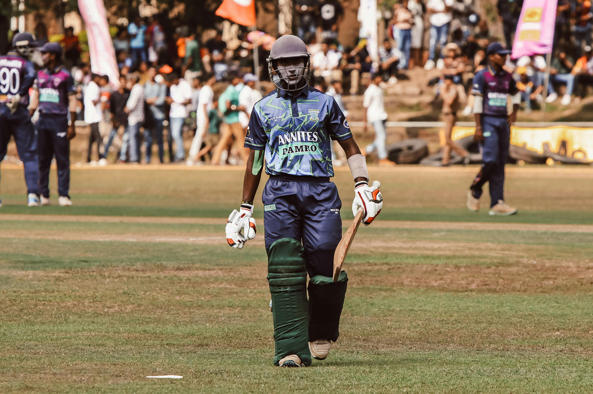
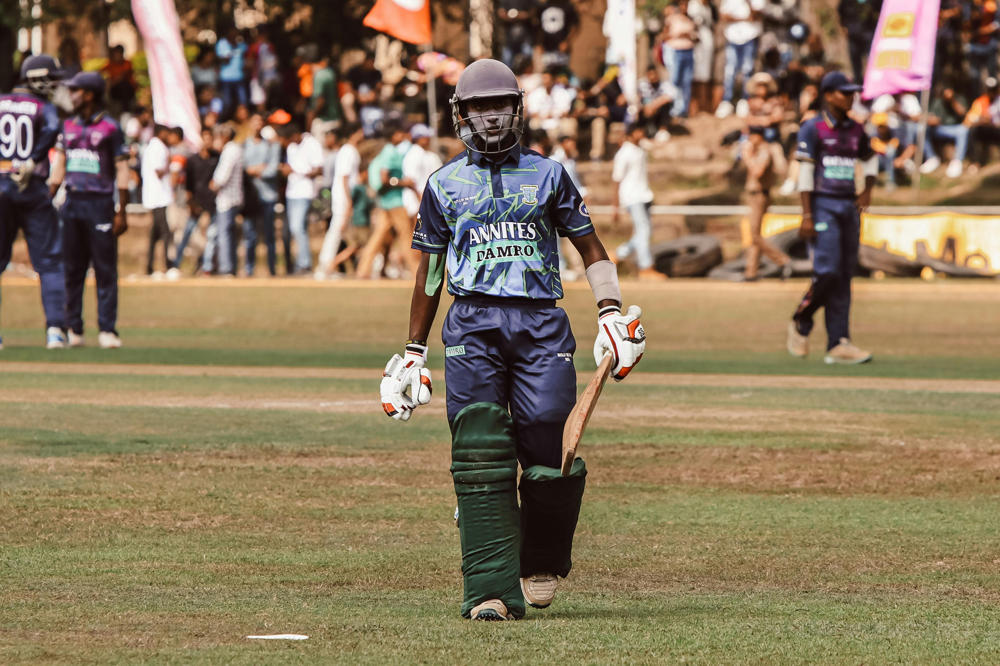

Cricket, often dubbed the "gentleman’s game," is a sport that transcends borders and cultures, captivating millions around the globe. With its rich history dating back to the 16th century in England, cricket has evolved into various formats, including the classic Test matches, the fast-paced One Day Internationals (ODIs), and the thrilling Twenty20 (T20) games. Each format brings its own excitement and strategy, drawing in fans of all ages. Whether it’s the tension of a nail-biting finish or the grace of a perfectly executed cover drive, cricket combines skill, athleticism, and teamwork, making it a beloved pastime for players and spectators alike. From local parks to grand stadiums, the spirit of cricket fosters camaraderie and passion, ensuring its place as one of the world’s most cherished sports.
Dedicate time each week to practice your batting, bowling, and fielding skills. Consistency is key to improvement.
Study how professional players approach the game. Pay attention to their techniques, strategies, and decision-making processes.
Incorporate fitness training into your routine. Strength, agility, and endurance are crucial for peak performance on the field.
Don’t hesitate to ask coaches or experienced players for constructive criticism. Their insights can help you identify areas for improvement.
Remember to have fun! Maintaining a positive attitude and enjoying the game will enhance your performance and keep you motivated.
| Match | Date | Venue | Result |
|---|---|---|---|
| England vs South Africa | September 27, 2024 | Lord's, London | South Africa won by 4 wickets |
| West Indies vs Sri Lanka | September 26, 2024 | Kensington Oval, Barbados | West Indies won by 2 runs |
| India vs Australia | September 29, 2024 | Wankhede Stadium, Mumbai | India won by 5 wickets |
"Every match brings new challenges, and today’s games were a testament to the spirit of cricket."- Brian Lara
"The thrill of the chase and the excitement of a last-minute victory are what make cricket unforgettable."- Sachin Tendulkar
 
